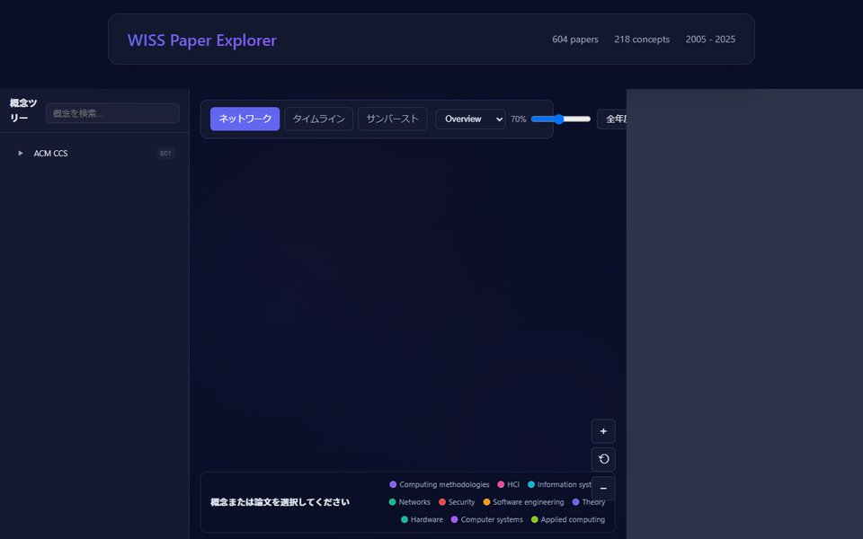

Projects / Research
Mapping HCI
Meta-science of HCI: how the field is organized and how its areas meet

Mapping HCI is a meta-science project that treats the HCI literature itself as data and asks how the field is organized and how its separate areas come to meet. HCI mixes systems, empirical studies, design, and theory, and even its core terms are not fully shared, so counting topics or keyword co-occurrences gives only a partial picture of how the field changes.
The project has two strands. WISSpectrum is a search tool for the proceedings of WISS, a Japanese workshop on interactive systems: an LLM summarizes each paper's positioning, purpose, method, and evaluation, each summary is embedded separately, and papers are also placed on ACM CCS axes, so researchers can look for related work from a chosen perspective. Topological Bridges analyzes concepts from about 30,000 papers at four SIGCHI venues with persistent homology to find pairs of concepts from different areas that have not yet appeared together in a paper but later do.
Both strands treat their output as material for researchers to read and question rather than as a forecast. The CHI 2026 work, for example, reports detected bridges that never integrated or that rest on noisy vocabulary, and presents each bridge as a hypothesis that needs domain judgement.
Structure
-
01
WISSpectrum
Literature search using perspective-based neighbors and ACM CCS axes
WISSpectrum is a literature search system for the proceedings of WISS, a Japanese workshop on interactive systems and software. An LLM summarizes each paper's positioning, purpose, method, and evaluation in Japanese and English, and each summary is embedded separately, so nearest neighbors can be retrieved from one perspective at a time. Papers are also tagged with ACM CCS concepts and can be browsed along that hierarchy as a tree, network, timeline, or sunburst. It was presented as a WISS Challenge entry at WISS 2025.
- 2025.12DomesticWISSpectrum: A Literature Search System Using Perspective-Based Neighbors and CCS AxesKosuke Shimizu, Shohei Komatsu, Hidenori WatanaveWISS 2025 (WISS Challenge)

-
02
Topological Bridges
Detecting cross-area concept links in HCI using persistent homology
This study asks whether links between separate areas of HCI can be detected before the two sides appear together in papers. Concepts from roughly 30,000 CHI, UIST, CSCW, and UbiComp papers are embedded per year; persistent homology then connects them in order of similarity and records loops that stay unfilled across many thresholds. Loop edges that cross semantic communities become bridge candidates. In a retrospective backtest these pairs later co-occurred much more often than semantically similar pairs, though less often than link-prediction picks that already share neighbors; the median lead time was two years.
- 2026.04Extended AbstractDetecting Cross-Area Concept Links in HCI Using Persistent HomologyKosuke Shimizu, Shohei Komatsu, Kazuhiro Hayashi, Keiichi ZempoCHI 2026 Extended Abstracts · DOI 10.1145/3772363.3798751